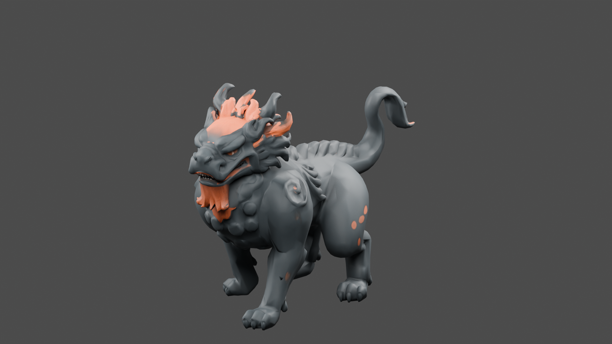
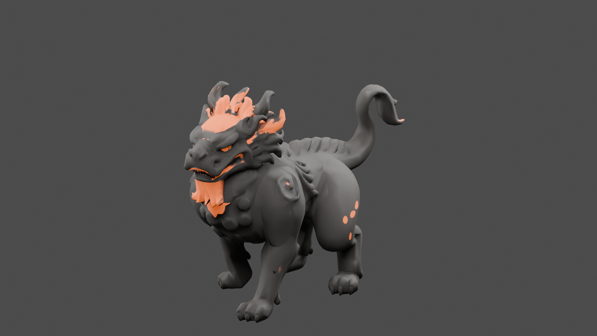
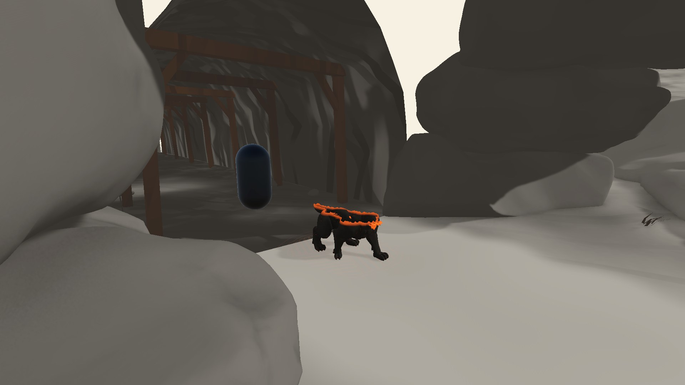
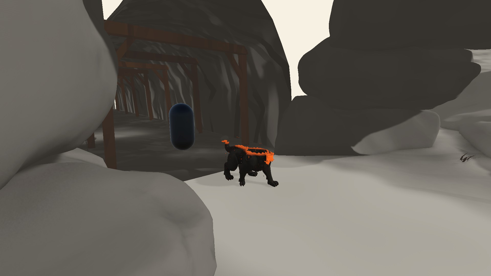

숯빛 몸 · 갈기와 수염의 불씨 · 화 문양 위에서 형성되고 재로 소멸
정적 외형·등장 연출 검토 / 리깅·전투 미연결
C2 1080p 진단 영상 2개. 실제 입력·적 AI 영상이 아닙니다.




12,532삼각형 · 재질 1개 · 전체 높이 1.55m · 추가 Meshy 비용 0 · 수치 검사 48개 통과
0~0.35초 바닥 문양 → 0.2~1.2초 불씨 경계로 형성 → 3.8초까지 유지 → 4.6초까지 재·불티로 소멸